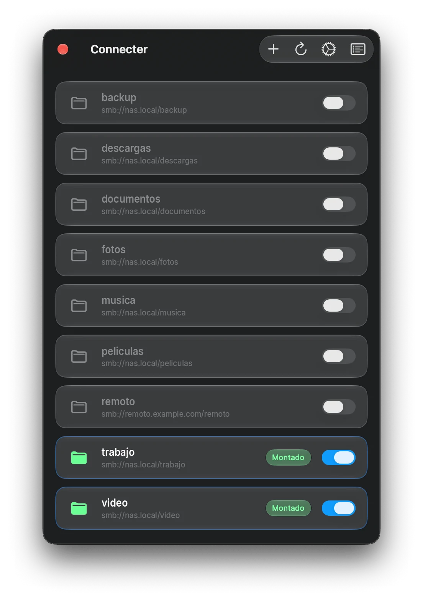
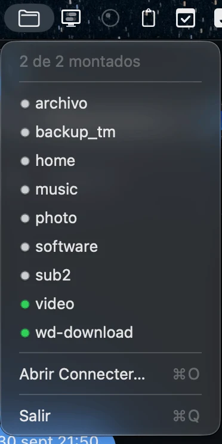
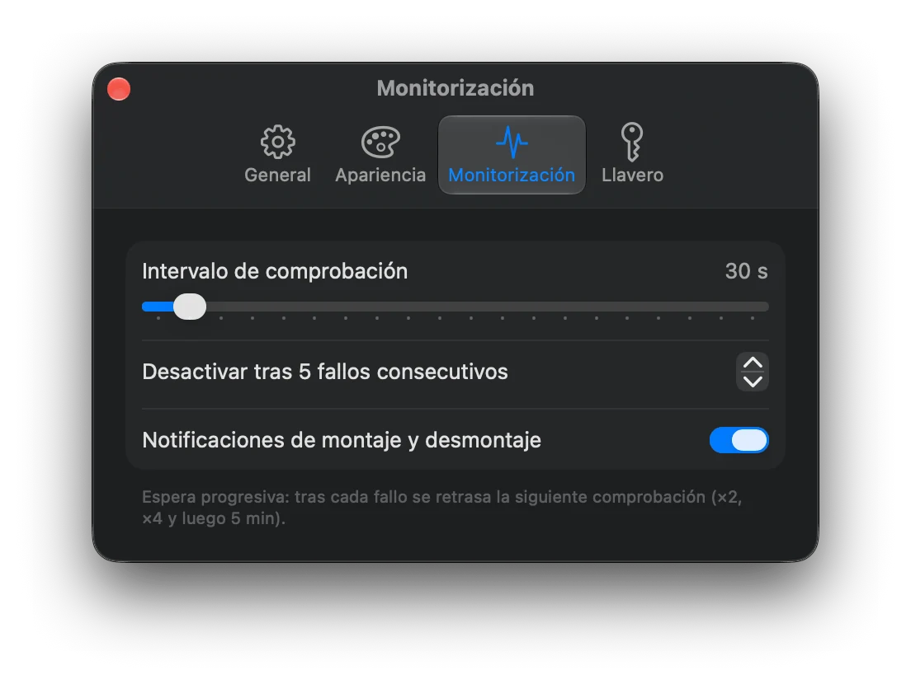
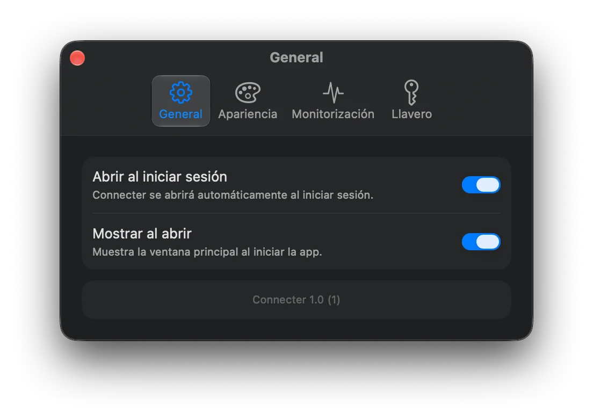
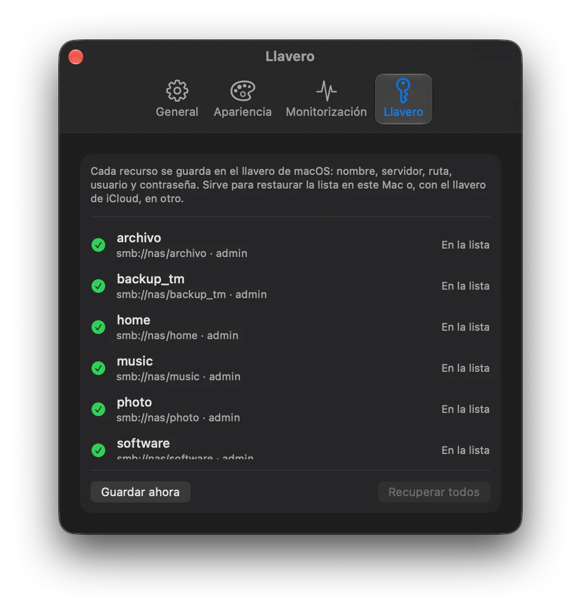

Una preocupación menos.
Tus unidades de red, siempre conectadas.
Connecter vive en la barra de menús de tu Mac y monta tus carpetas compartidas SMB por ti: al arrancar, tras el reposo y cada vez que cambia la red.
Requiere macOS 26 Tahoe o posterior

Todo lo que necesitas, nada que no.
Connecter se encarga de que tus carpetas de red estén donde las esperas, sin que tengas que volver a abrir «Conectarse al servidor».
Montaje automático
Conecta tus carpetas al arrancar y las recupera tras el reposo, los cambios de red y los cortes.
Estado de un vistazo
El icono de la barra de menús te avisa solo cuando algo requiere tu atención.
Contraseñas en el Llavero
Las credenciales se guardan únicamente en el Llavero de macOS, nunca en disco.
Reintentos inteligentes
Espera progresiva entre intentos y pausa automática mientras no hay conexión.
Registro de actividad
Historial filtrable de montajes, desconexiones y errores.
Nativa y ligera
Hecha en SwiftUI, sin dependencias externas y dentro del App Sandbox.
Así se ve en tu Mac.
Nativa de macOS Tahoe. Todo se ajusta desde una ventana de ajustes sencilla.




Configúralo una vez. Olvídate.
Tres pasos y tus unidades de red dejan de ser un problema.
Añade tus carpetas
Indica la dirección SMB de cada carpeta compartida de tu NAS o servidor.
Guarda tus credenciales
Usuario y contraseña quedan protegidos en el Llavero de macOS.
Déjalo en la barra de menús
Connecter monta, vigila y reconecta en segundo plano. Solo te avisa si algo falla.
Privacidad
Connecter trabaja en tu Mac y con tu red. Tus datos son tuyos.
- Sin recogida de datos. Connecter no recopila, no envía ni comparte información personal ni de uso con el desarrollador ni con terceros.
- Credenciales en el Llavero. Las contraseñas se almacenan exclusivamente en el Llavero de macOS; nunca se escriben en disco en texto plano.
- Datos locales. La configuración y el registro de actividad se guardan solo en tu Mac y puedes borrarlos desinstalando la aplicación.
- App Sandbox. La aplicación se ejecuta aislada dentro del App Sandbox de macOS, con acceso únicamente a lo que necesita.
Preguntas frecuentes
Lo que suele preguntarse antes de instalarla.
¿Qué tipo de carpetas compartidas admite?
Carpetas compartidas por SMB, el protocolo que usan la mayoría de NAS (Synology, QNAP…), servidores Windows y otros Mac.
¿Qué versión de macOS necesito?
macOS 26 Tahoe o posterior.
¿Qué pasa si cierro la tapa o cambio de Wi‑Fi?
Al despertar el Mac o al detectar un cambio de red, Connecter vuelve a montar tus carpetas automáticamente. Si no hay conexión, pausa los intentos hasta que vuelva.
¿Dónde se guardan mis contraseñas?
Únicamente en el Llavero de macOS, el mismo sistema que usa el propio sistema operativo para tus contraseñas.
¿Cuándo estará disponible?
Connecter llegará próximamente al Mac App Store. Esta página se actualizará con el enlace de descarga.
Soporte
¿Algo no funciona como esperabas o tienes una sugerencia? Escríbeme a través de arcesaez.com e incluye, si puedes, tu versión de macOS y las entradas relevantes del registro de actividad.
Una preocupación menos.
Deja de reconectar a mano. Connecter llegará pronto al Mac App Store.
Próximamente